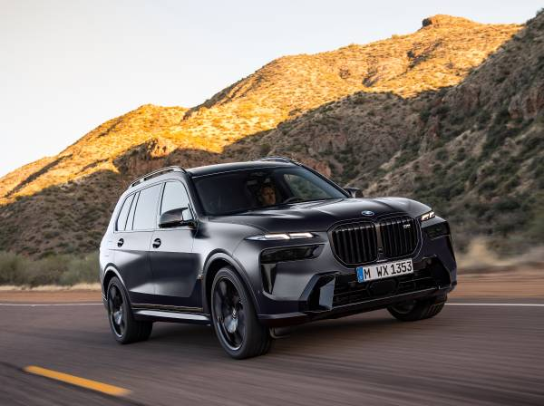
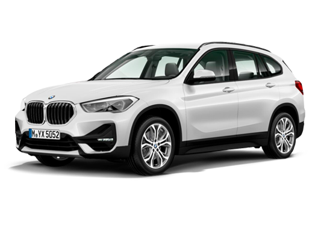

Bayerische Motoren Werke é uma empresa automobilística alemã, fabricante de motocicletas e
automóveis de luxo, sediada na Baviera,
Alemanha. A BMW desenvolve, fabrica e comercializa seus automóveis sob as marcas BMW, Mini e Rolls-Royce, e
as motocicletas sob a marca BMW
Motorrad.

História
A BMW, que significa Bayerische Motoren Werke, foi fundada no Com a derrota alemã na I Guerra
Mundial, o Tratado de Versalhes proibiu a fabricação de aviões em território alemão, o que fez com que a BMW
passasse a trabalhar em outros setores.
Valores
BMW X7 M60i. A partir de R$1.199.950 à vista
BMW X6. A partir de R$ 820.950 à vista
BMW X6 M Competition. A partir de R$1.190
MW X5. A partir de R$731.950 à vista
BMW X3. A partir de R$ 433.950 à vista
BMW X1. A partir de R$ 299.950 à vista

Qual é a BMW mais barata no Brasil?

Atualmente o BMW mais barato à venda no Brasil é o SUV X1 sDrive20i GP Plus. Ele custa R$
289.950, sensivelmente abaixo dos Série 1 e Série 3 de entrada,
que beiram os R$ 300 mil.
Mesmo sendo a versão mais simples, o mais barato dos X1 está longe de ser um modelo tão básico.
Contatos

Ibirapuera: (11) 3254-2920
Ibirapuera: (11) 3254-2929
Avenida 23 de Maio, 3033 - Ibirapuera - São Paulo-SP